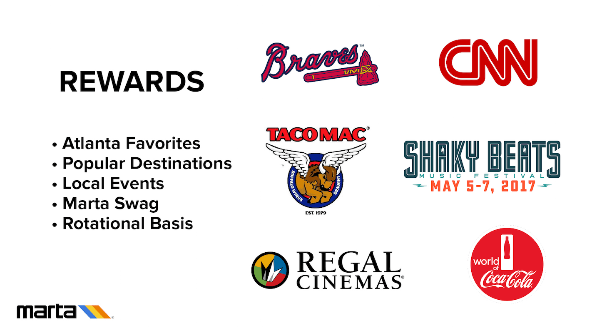
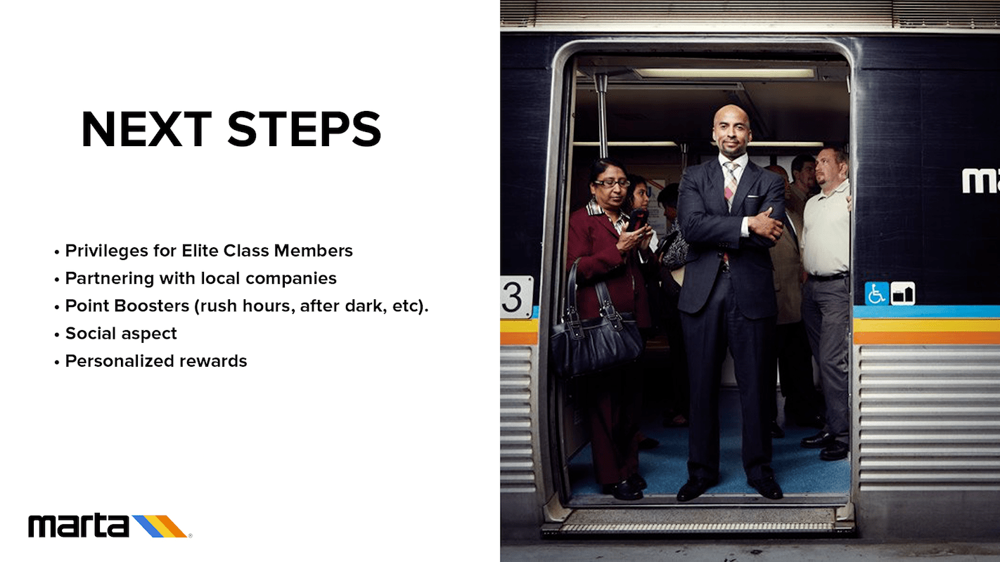

2017 Marta Hackathon
Try it outCHALLENGE
- To increase ridership on MARTA
- To improve the rider experience on MARTA
MY ROLE
This being my fourth hackathon, I took it on myself to guide others and plan out a strategy. I participated as a UX designer this time around instead of as a developer. Having finished my capstone project with the "Sprint" methodology by Google Ventures, I wanted to try a compressed adaptation of that for this 24-hour hackathon. After forming groups, I did a competitive, comparative, and heuristics analyses to identify pain points. I wanted to reaffirm our hypothesis that a rewards-integration to the existing MARTA app is something people wanted — so I sent out a survey.
From the survey, we found that people begrudgingly take MARTA because they have to, otherwise they'd much prefer alternatives like Lyft, Uber, bike or drive to their destinations. By adding a tier-based reward system, people like the idea of getting rewarded for frequent rides. This reminds me of what behavioral designer, Nir Eyal, said about getting people to use products based on habbits and addition. His formula goes something like:
- Trigger
- Action
- Reward
- Investment
APPROACH
Out of the nearly 200+ people, we got about 21 results back from our survey. After reading the results, I coordinated how our hours are to be spent the rest of the day. It was something like:
- 9-10: Sketch ideas
- 11-12: Combine ideas, start designing in SketchApp
- 12-1: Eat lunch, network, talk to people for ideas
- 1-2: Polish up designs, discuss information architecture if it makes sense. Other people on the team would start integrating our survey results into a Keynote presentation
- 3-4: Export to InVision for prototyping while finishing up presentation
- 4-5: Present to 3 different judges
RESULTS
We were able to accomplish our goals in a timely manner: assembled a clickable prototype, polished the presentation materials, and prep a team member to present the idea — all while maintaining our sanity and having fun!! This hackathon was a great test to reaffirm the lessons I learned at General Assembly and reflect how well I can work with others, especially people I just met.
TOOLS
Free Online Survey, Sketchapp, Invision, Keynote, Slack


- 
- 